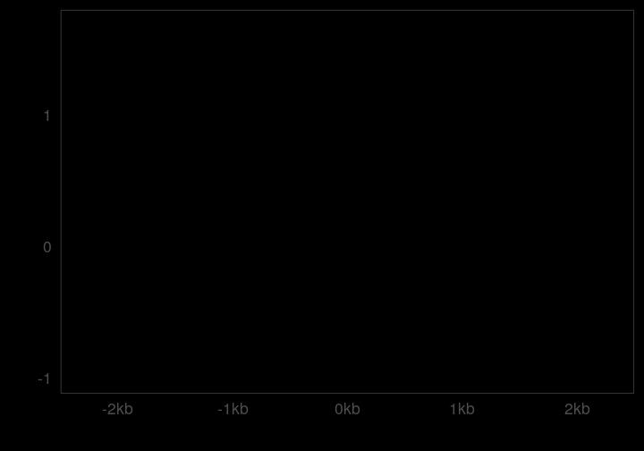
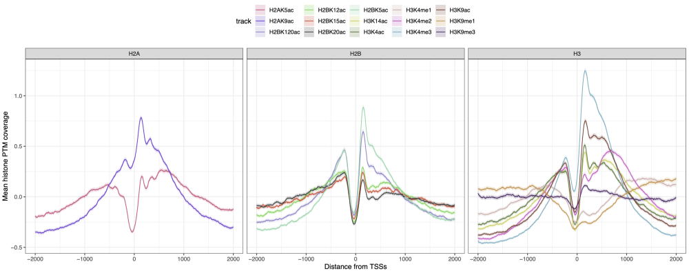

Introduction
Genome-wide assays provide powerful methods to profile the
composition, the conformation and the activity of the chromatin. Linear
“coverage” tracks (generally stored as .bigwig files) are
one of the outputs obtained when processing raw high-throughput
sequencing data. These coverage tracks can be inspected in genome
interactive browsers (e.g. IGV) to visually appreciate
local or global variations in the coverage of specific genomic
assays.
The coverage signal aggregated over multiple genomic features can also be computed. This approach is very efficient to summarize and compare the coverage of chromatin modalities (e.g. protein binding profiles from ChIP-seq, transcription profiles from RNA-seq, chromatin accessibility from ATAC-seq, …) over hundreds and up to thousands of genomic features of interest. This unlocks a more quantitative description of the coverage over groups of genomic features.
tidyCoverage implements the
CoverageExperiment and the AggregatedCoverage
classes built on top of the SummarizedExperiment class.
These classes formalize the extraction and aggregation of coverage
tracks over sets of genomic features of interests.
Installation
tidyCoverage package can be installed from Bioconductor
using the following command:
if (!require("BiocManager", quietly = TRUE))
install.packages("BiocManager")
BiocManager::install("tidyCoverage")
CoverageExperiment and AggregatedCoverage
classes
CoverageExperiment
tidyCoverage package defines the
CoverageExperiment, directly extending the
SummarizedExperiment class. This means that all standard
methods available for SummarizedExperiments are available
for CoverageExperiment objects.
library(tidyCoverage)
showClass("CoverageExperiment")
#> Class "CoverageExperiment" [package "tidyCoverage"]
#>
#> Slots:
#>
#> Name: rowRanges colData
#> Class: GenomicRanges_OR_GRangesList DataFrame
#>
#> Name: assays NAMES
#> Class: Assays_OR_NULL character_OR_NULL
#>
#> Name: elementMetadata metadata
#> Class: DataFrame list
#>
#> Extends:
#> Class "RangedSummarizedExperiment", directly
#> Class "SummarizedExperiment", by class "RangedSummarizedExperiment", distance 2
#> Class "RectangularData", by class "RangedSummarizedExperiment", distance 3
#> Class "Vector", by class "RangedSummarizedExperiment", distance 3
#> Class "Annotated", by class "RangedSummarizedExperiment", distance 4
#> Class "vector_OR_Vector", by class "RangedSummarizedExperiment", distance 4
data(ce)
ce
#> class: CoverageExperiment
#> dim: 1 2
#> metadata(0):
#> assays(1): coverage
#> rownames(1): Scc1
#> rowData names(2): features n
#> colnames(2): RNA_fwd RNA_rev
#> colData names(1): track
#> width: 3000
rowData(ce)
#> DataFrame with 1 row and 2 columns
#> features n
#> <character> <integer>
#> Scc1 Scc1 614
rowRanges(ce)
#> GRangesList object of length 1:
#> $Scc1
#> GRanges object with 614 ranges and 2 metadata columns:
#> seqnames ranges strand | name score
#> <Rle> <IRanges> <Rle> | <character> <numeric>
#> [1] II 4290-7289 + | YBL109W 0
#> [2] II 6677-9676 + | YBL108W 0
#> [3] II 7768-10767 + | YBL107W-A 0
#> [4] II 22598-25597 + | YBL102W 0
#> [5] II 26927-29926 + | YBL100W-C 0
#> ... ... ... ... . ... ...
#> [610] IV 1506505-1509504 + | YDR536W 0
#> [611] IV 1509402-1512401 + | YDR538W 0
#> [612] IV 1510594-1513593 + | YDR539W 0
#> [613] IV 1521749-1524748 + | YDR542W 0
#> [614] IV 1524821-1527820 + | YDR545W 0
#> -------
#> seqinfo: 3 sequences from an unspecified genome
colData(ce)
#> DataFrame with 2 rows and 1 column
#> track
#> <character>
#> RNA_fwd RNA_fwd
#> RNA_rev RNA_rev
assays(ce)
#> List of length 1
#> names(1): coverage
assay(ce, 'coverage')
#> RNA_fwd RNA_rev
#> Scc1 numeric,184200 numeric,184200Note that whereas traditional SummarizedExperiment
objects store atomic values stored in individual cells of an assay, each
cell of the CoverageExperiment coverage assay
contains a list of length 1, itself containing an array. This array
stores the per-base coverage score of a genomic track (from
colData) over a set of genomic ranges of interest (from
rowData).
assay(ce, 'coverage')
#> RNA_fwd RNA_rev
#> Scc1 numeric,184200 numeric,184200
assay(ce, 'coverage')[1, 1] |> class()
#> [1] "list"
assay(ce, 'coverage')[1, 1] |> length()
#> [1] 1
assay(ce, 'coverage')[1, 1][[1]] |> class()
#> [1] "matrix" "array"
assay(ce, 'coverage')[1, 1][[1]] |> dim()
#> [1] 614 300
# Compare this to `rowData(ce)$n` and `width(ce)`
rowData(ce)$n
#> [1] 614
width(ce)
#> IntegerList of length 1
#> [["Scc1"]] 3000 3000 3000 3000 3000 3000 3000 ... 3000 3000 3000 3000 3000 3000
assay(ce[1, 1], 'coverage')[[1]][1:10, 1:10]
#> [,1] [,2] [,3] [,4] [,5] [,6]
#> [1,] -0.2573943 -0.2573943 -0.2573943 -0.2573943 -0.2573943 -0.2573943
#> [2,] -0.2712007 -0.2712007 -0.2712007 -0.2712007 -0.2712007 -0.2712007
#> [3,] -0.4199078 -0.4199078 -0.4199078 -0.4199078 -0.4199078 -0.4199078
#> [4,] -0.6413458 -0.6413458 -0.6413458 -0.6413458 -0.6413458 -0.6460800
#> [5,] -0.5558896 -0.5558896 -0.5558896 -0.5558896 -0.5558896 -0.5558896
#> [6,] 0.5000157 0.5000157 0.5000157 0.5000157 0.5000157 0.5000157
#> [7,] -1.1980792 -1.1980792 -1.1980792 -1.1980792 -1.1980792 -1.1980792
#> [8,] 1.2336717 1.0952403 1.0952403 1.0952403 1.0952403 1.0952403
#> [9,] 2.0565955 2.0565955 2.0565955 2.0565955 1.9672122 1.9289051
#> [10,] -0.6665461 -0.6665461 -0.6665461 -0.6665461 -0.6665461 -0.6665461
#> [,7] [,8] [,9] [,10]
#> [1,] -0.2573943 -0.2573943 -0.2573943 -0.2573943
#> [2,] -0.2712007 -0.2712007 -0.2712007 -0.2712007
#> [3,] -0.4199078 -0.4199078 -0.4199078 -0.4199078
#> [4,] -0.6466060 -0.6466060 -0.6466060 -0.6466060
#> [5,] -0.5558896 -0.5558896 -0.5558896 -0.5558896
#> [6,] 0.8920222 1.1533598 1.1533598 1.1533598
#> [7,] -1.1980792 -1.1980792 -1.1980792 -1.1980792
#> [8,] 1.0952403 1.1311052 1.4538886 1.4538886
#> [9,] 1.9289051 1.9289051 1.9289051 1.9289051
#> [10,] -0.6665461 -0.6140548 -0.6082225 -0.6082225
AggregatedCoverage
AggregatedCoverage also directly extends the
SummarizedExperiment class.
showClass("AggregatedCoverage")
#> Class "AggregatedCoverage" [package "tidyCoverage"]
#>
#> Slots:
#>
#> Name: rowRanges colData
#> Class: GenomicRanges_OR_GRangesList DataFrame
#>
#> Name: assays NAMES
#> Class: Assays_OR_NULL character_OR_NULL
#>
#> Name: elementMetadata metadata
#> Class: DataFrame list
#>
#> Extends:
#> Class "RangedSummarizedExperiment", directly
#> Class "SummarizedExperiment", by class "RangedSummarizedExperiment", distance 2
#> Class "RectangularData", by class "RangedSummarizedExperiment", distance 3
#> Class "Vector", by class "RangedSummarizedExperiment", distance 3
#> Class "Annotated", by class "RangedSummarizedExperiment", distance 4
#> Class "vector_OR_Vector", by class "RangedSummarizedExperiment", distance 4
data(ac)
ac
#> class: AggregatedCoverage
#> dim: 1 2
#> metadata(0):
#> assays(8): mean median ... ci_low ci_high
#> rownames(1): Scc1
#> rowData names(1): features
#> colnames(2): RNA_fwd RNA_rev
#> colData names(1): track
#> width: 3000
#> binning: 1
rowData(ac)
#> DataFrame with 1 row and 1 column
#> features
#> <character>
#> Scc1 Scc1
rowRanges(ac)
#> GRangesList object of length 1:
#> $Scc1
#> GRanges object with 614 ranges and 2 metadata columns:
#> seqnames ranges strand | name score
#> <Rle> <IRanges> <Rle> | <character> <numeric>
#> [1] II 234992-237991 + | YBL002W 0
#> [2] II 226136-229135 + | YBL004W 0
#> [3] II 215970-218969 + | YBL005W 0
#> [4] II 219830-222829 + | YBL005W-B 0
#> [5] II 215211-218210 + | YBL006W-A 0
#> ... ... ... ... . ... ...
#> [610] IV 1506505-1509504 + | YDR536W 0
#> [611] IV 1509402-1512401 + | YDR538W 0
#> [612] IV 1510594-1513593 + | YDR539W 0
#> [613] IV 1521749-1524748 + | YDR542W 0
#> [614] IV 1524821-1527820 + | YDR545W 0
#> -------
#> seqinfo: 3 sequences from an unspecified genome
colData(ac)
#> DataFrame with 2 rows and 1 column
#> track
#> <character>
#> RNA_fwd RNA_fwd
#> RNA_rev RNA_rev
assays(ac)
#> List of length 8
#> names(8): mean median min max sd se ci_low ci_high
assay(ac, 'mean')
#> RNA_fwd RNA_rev
#> Scc1 numeric,3000 numeric,3000It stores per-base coverage statistical metrics in assays
(e.g. mean, median, …). Each assay thus
contains an matrix of vectors.
Manipulate CoverageExperiment objects
Create a CoverageExperiment object
One can use CoverageExperiment() constructor along
with:
- A single
bigwigfile importedas = "Rle"and aGRangesor a namedGRangesList; - A named list of
bigwigfiles importedas = "Rle"and aGRangesor a namedGRangesList; - A
BigWigFileobject and aGRangesor a namedGRangesList; - A named
BigWigFileListobject and aGRangesor a namedGRangesList;
A numeric width argument also needs to be specified. It
is used to center features to their midpoint and resize
them to the chosen width.
For example:
library(rtracklayer)
bw_file <- system.file("extdata", "MNase.bw", package = "tidyCoverage")
bw_file
#> [1] "/__w/_temp/Library/tidyCoverage/extdata/MNase.bw"
bed_file <- system.file("extdata", "TSSs.bed", package = "tidyCoverage")
bed_file
#> [1] "/__w/_temp/Library/tidyCoverage/extdata/TSSs.bed"
CE <- CoverageExperiment(
tracks = import(bw_file, as = "Rle"),
features = import(bed_file),
width = 3000
)
CE
#> class: CoverageExperiment
#> dim: 1 1
#> metadata(0):
#> assays(1): coverage
#> rownames(1): features
#> rowData names(2): features n
#> colnames(1): track
#> colData names(1): track
#> width: 3000And this works as well (note that in this case the names of the
GRangesList are being used as rownames):
library(rtracklayer)
bw_file <- system.file("extdata", "MNase.bw", package = "tidyCoverage")
bw_file
#> [1] "/__w/_temp/Library/tidyCoverage/extdata/MNase.bw"
bed_file <- system.file("extdata", "TSSs.bed", package = "tidyCoverage")
bed_file
#> [1] "/__w/_temp/Library/tidyCoverage/extdata/TSSs.bed"
CoverageExperiment(
tracks = BigWigFile(bw_file),
features = GRangesList('TSSs' = import(bed_file)),
width = 3000
)
#> class: CoverageExperiment
#> dim: 1 1
#> metadata(0):
#> assays(1): coverage
#> rownames(1): TSSs
#> rowData names(2): features n
#> colnames(1): track
#> colData names(1): track
#> width: 3000Bin a CoverageExperiment object
By default, CoverageExperiment objects store
per-base track coverage. This implies that any cell from the
coverage assay has as many columns as the
width provided in the constructor function.
If per-base resolution is not needed, one can use the
window argument in the constructor function to average the
coverage score over non-overlapping bins.
CE2 <- CoverageExperiment(
tracks = import(bw_file, as = "Rle"),
features = import(bed_file),
width = 3000,
window = 20
)
CE2
#> class: CoverageExperiment
#> dim: 1 1
#> metadata(0):
#> assays(1): coverage
#> rownames(1): features
#> rowData names(2): features n
#> colnames(1): track
#> colData names(1): track
#> width: 3000
assay(CE2, 'coverage')[1, 1][[1]] |> ncol()
#> [1] 150If a CoverageExperiment object has already been
computed, the coarsen() function can be used afterwards to
reduce the resolution of the object.
Expand a CoverageExperiment object
The expand method from the tidyr package is
adapted to CoverageExperiment objects to return a tidy
tibble. This reformated object contains several
columns:
-
track: storingcolnames, i.e. names of tracks used in the originalCoverageExperiment; -
features: storingrownames, i.e. names of features used in the originalCoverageExperiment; -
chr: featuresseqnamesfrom theCoverageExperiment; -
ranges: features from theCoverageExperimentcoerced ascharacter; -
strand: featuresstrandfrom theCoverageExperiment; -
coord: exact genomic position from theCoverageExperiment; -
coverage: coverage score extracted from correspondingtrackatchr:coord; -
coord.scaled: 0-centered genomic position;
expand(CE)
#> # A tibble: 5,355,000 × 8
#> # Groups: track, features, ranges [1,785]
#> track features chr ranges strand coord coverage coord.scaled
#> <chr> <chr> <chr> <chr> <chr> <dbl> <dbl> <dbl>
#> 1 track features II II:4290-7289:+ + 4290 0 -1500
#> 2 track features II II:4290-7289:+ + 4291 0 -1499
#> 3 track features II II:4290-7289:+ + 4292 0 -1498
#> 4 track features II II:4290-7289:+ + 4293 0 -1497
#> 5 track features II II:4290-7289:+ + 4294 0 -1496
#> 6 track features II II:4290-7289:+ + 4295 0 -1495
#> 7 track features II II:4290-7289:+ + 4296 0 -1494
#> 8 track features II II:4290-7289:+ + 4297 0 -1493
#> 9 track features II II:4290-7289:+ + 4298 0 -1492
#> 10 track features II II:4290-7289:+ + 4299 0 -1491
#> # ℹ 5,354,990 more rowsNote that if the CoverageExperiment object has been
coarsened using window = ..., the coord and
coord.scaled are handled correspondingly.
expand(CE3)
#> # A tibble: 267,750 × 8
#> # Groups: track, features, ranges [1,785]
#> track features chr ranges strand coord coverage coord.scaled
#> <chr> <chr> <chr> <chr> <chr> <dbl> <dbl> <dbl>
#> 1 track features II II:4290-7289:+ + 4290 0 -1500
#> 2 track features II II:4290-7289:+ + 4310 0 -1480
#> 3 track features II II:4290-7289:+ + 4330 0 -1460
#> 4 track features II II:4290-7289:+ + 4350 0 -1440
#> 5 track features II II:4290-7289:+ + 4370 0 -1420
#> 6 track features II II:4290-7289:+ + 4390 0 -1400
#> 7 track features II II:4290-7289:+ + 4410 0 -1380
#> 8 track features II II:4290-7289:+ + 4430 0 -1360
#> 9 track features II II:4290-7289:+ + 4450 0 -1340
#> 10 track features II II:4290-7289:+ + 4470 0 -1320
#> # ℹ 267,740 more rowsPlot coverage of a set of tracks over a single genomic locus
To illustrate how to visualize coverage tracks from a
CoverageExperiment object over a single genomic locus of
interest, let’s use sample data provided in the
tidyCoverage package.
# ~~~~~~~~~~~~~~~ Import coverage tracks into a named list ~~~~~~~~~~~~~~~ #
tracks <- list(
Scc1 = system.file("extdata", "Scc1.bw", package = "tidyCoverage"),
RNA_fwd = system.file("extdata", "RNA.fwd.bw", package = "tidyCoverage"),
RNA_rev = system.file("extdata", "RNA.rev.bw", package = "tidyCoverage"),
PolII = system.file("extdata", "PolII.bw", package = "tidyCoverage"),
MNase = system.file("extdata", "MNase.bw", package = "tidyCoverage")
) |> BigWigFileList()
locus <- GRanges("II:450001-475000")
# ~~~~~~~~~~~~~~~ Instantiate a CoverageExperiment object ~~~~~~~~~~~~~~~ #
CE_chrII <- CoverageExperiment(
tracks = tracks,
features = locus,
width = width(locus)
)
CE_chrII
#> class: CoverageExperiment
#> dim: 1 5
#> metadata(0):
#> assays(1): coverage
#> rownames(1): features
#> rowData names(2): features n
#> colnames(5): Scc1 RNA_fwd RNA_rev PolII MNase
#> colData names(1): track
#> width: 25000From there, it is easy to (optionally) coarsen then
expand the CoverageExperiment into a
tibble and use ggplot2 for visualization.
library(ggplot2)
CE_chrII |>
coarsen(window = 10) |>
expand() |>
ggplot(aes(x = coord, y = coverage)) +
geom_col(aes(fill = track, col = track)) +
facet_grid(track~., scales = 'free') +
scale_x_continuous(expand = c(0, 0)) +
theme_bw() +
theme(legend.position = "none", aspect.ratio = 0.1)In this plot, each facet represents the coverage of a different
genomic track over a single region of interest
(chrII:450001-475000). Each facet has independent scaling
thanks to facet_grid(..., scales = free).
Manipulate AggregatedCoverage objects
Aggregate a CoverageExperiment into an
AggregatedCoverage object
It is often useful to aggregate() genomic
tracks coverage over a set of genomic
features.
AC <- aggregate(CE)
AC
#> class: AggregatedCoverage
#> dim: 1 1
#> metadata(0):
#> assays(8): mean median ... ci_low ci_high
#> rownames(1): features
#> rowData names(2): features n
#> colnames(1): track
#> colData names(1): track
#> width: 3000
#> binning: 1
assay(AC, 'mean')[1, 1][[1]] |> length()
#> [1] 3000
AC20 <- aggregate(CE, bin = 20)
AC20
#> class: AggregatedCoverage
#> dim: 1 1
#> metadata(0):
#> assays(8): mean median ... ci_low ci_high
#> rownames(1): features
#> rowData names(2): features n
#> colnames(1): track
#> colData names(1): track
#> width: 3000
#> binning: 20
assay(AC20, 'mean')[1, 1][[1]] |> length()
#> [1] 150The resulting AggregatedCoverage objects can be readily
coerced into a tibble.
as_tibble(AC20)
#> # A tibble: 150 × 13
#> .sample .feature track features coord mean median min max sd se
#> <chr> <chr> <chr> <chr> <dbl> <dbl> <dbl> <dbl> <dbl> <dbl> <dbl>
#> 1 track features track features -1500 2.99 2.89 0 9.51 1.75 0.0415
#> 2 track features track features -1480 3.01 2.92 0 9.56 1.76 0.0416
#> 3 track features track features -1460 3.07 2.96 0 10.4 1.79 0.0425
#> 4 track features track features -1440 3.13 3.00 0 10.4 1.81 0.0428
#> 5 track features track features -1420 3.13 2.99 0 10.4 1.81 0.0428
#> 6 track features track features -1400 3.12 2.98 0 10.1 1.81 0.0428
#> 7 track features track features -1380 3.06 2.95 0 9.54 1.79 0.0424
#> 8 track features track features -1360 3.01 2.93 0 10.2 1.79 0.0423
#> 9 track features track features -1340 3.06 2.98 0 10.6 1.80 0.0426
#> 10 track features track features -1320 3.03 2.95 0 10.6 1.80 0.0426
#> # ℹ 140 more rows
#> # ℹ 2 more variables: ci_low <dbl>, ci_high <dbl>Note that the coarsen-then-aggregate or
aggregate-by-bin are NOT equivalent. This
is due to the certain operations being not commutative with
mean (e.g. sd,
min/max, …).
# Coarsen `CoverageExperiment` with `window = ...` then per-bin `aggregate`:
CoverageExperiment(
tracks = import(bw_file, as = "Rle"), features = import(bed_file),
width = 3000
) |>
coarsen(window = 20) |> ## FIRST COARSEN...
aggregate() |> ## ... THEN AGGREGATE
as_tibble()
#> # A tibble: 150 × 13
#> .sample .feature track features coord mean median min max sd se
#> <chr> <chr> <chr> <chr> <dbl> <dbl> <dbl> <dbl> <dbl> <dbl> <dbl>
#> 1 track features track features -1500 2.99 2.95 0 9.01 1.65 0.0391
#> 2 track features track features -1480 3.01 2.97 0 9.52 1.67 0.0396
#> 3 track features track features -1460 3.07 3.00 0 10.4 1.70 0.0402
#> 4 track features track features -1440 3.13 3.04 0 10.4 1.72 0.0407
#> 5 track features track features -1420 3.13 3.01 0 10.4 1.72 0.0407
#> 6 track features track features -1400 3.12 3.02 0 9.28 1.71 0.0405
#> 7 track features track features -1380 3.06 3.01 0 9.23 1.70 0.0402
#> 8 track features track features -1360 3.01 2.94 0 9.68 1.70 0.0401
#> 9 track features track features -1340 3.06 3.01 0 10.6 1.71 0.0405
#> 10 track features track features -1320 3.03 2.99 0 10.6 1.71 0.0404
#> # ℹ 140 more rows
#> # ℹ 2 more variables: ci_low <dbl>, ci_high <dbl>
# Per-base `CoverageExperiment` then `aggregate` with `bin = ...`:
CoverageExperiment(
tracks = import(bw_file, as = "Rle"), features = import(bed_file),
width = 3000
) |>
aggregate(bin = 20) |> ## DIRECTLY AGGREGATE BY BIN
as_tibble()
#> # A tibble: 150 × 13
#> .sample .feature track features coord mean median min max sd se
#> <chr> <chr> <chr> <chr> <dbl> <dbl> <dbl> <dbl> <dbl> <dbl> <dbl>
#> 1 track features track features -1500 2.99 2.89 0 9.51 1.75 0.0415
#> 2 track features track features -1480 3.01 2.92 0 9.56 1.76 0.0416
#> 3 track features track features -1460 3.07 2.96 0 10.4 1.79 0.0425
#> 4 track features track features -1440 3.13 3.00 0 10.4 1.81 0.0428
#> 5 track features track features -1420 3.13 2.99 0 10.4 1.81 0.0428
#> 6 track features track features -1400 3.12 2.98 0 10.1 1.81 0.0428
#> 7 track features track features -1380 3.06 2.95 0 9.54 1.79 0.0424
#> 8 track features track features -1360 3.01 2.93 0 10.2 1.79 0.0423
#> 9 track features track features -1340 3.06 2.98 0 10.6 1.80 0.0426
#> 10 track features track features -1320 3.03 2.95 0 10.6 1.80 0.0426
#> # ℹ 140 more rows
#> # ℹ 2 more variables: ci_low <dbl>, ci_high <dbl>
AggregatedCoverage over multiple tracks / feature
sets
As en example for the rest of this vignette, we compute an
AggregatedCoverage object using multiple genomic track
files and multiple sets of genomic ranges.
library(purrr)
#>
#> Attaching package: 'purrr'
#> The following object is masked from 'package:GenomicRanges':
#>
#> reduce
#> The following object is masked from 'package:IRanges':
#>
#> reduce
library(plyranges)
#>
#> Attaching package: 'plyranges'
#> The following object is masked from 'package:IRanges':
#>
#> slice
#> The following object is masked from 'package:stats':
#>
#> filter
# ~~~~~~~~~~~~~~~ Import genomic features into a named list ~~~~~~~~~~~~~~~ #
features <- list(
TSSs = system.file("extdata", "TSSs.bed", package = "tidyCoverage"),
`Convergent transcription` = system.file("extdata", "conv_transcription_loci.bed", package = "tidyCoverage")
) |> map(import) |> map(filter, strand == '+')
# ~~~~~~~~~~~~~~~ Import coverage tracks into a named list ~~~~~~~~~~~~~~~ #
tracks <- list(
Scc1 = system.file("extdata", "Scc1.bw", package = "tidyCoverage"),
RNA_fwd = system.file("extdata", "RNA.fwd.bw", package = "tidyCoverage"),
RNA_rev = system.file("extdata", "RNA.rev.bw", package = "tidyCoverage"),
PolII = system.file("extdata", "PolII.bw", package = "tidyCoverage"),
MNase = system.file("extdata", "MNase.bw", package = "tidyCoverage")
) |> map(import, as = 'Rle')
# ~~~~~~~~~~~~~~~ Compute aggregated coverage ~~~~~~~~~~~~~~~ #
CE <- CoverageExperiment(tracks, features, width = 5000, scale = TRUE, center = TRUE)
CE
#> class: CoverageExperiment
#> dim: 2 5
#> metadata(0):
#> assays(1): coverage
#> rownames(2): TSSs Convergent transcription
#> rowData names(2): features n
#> colnames(5): Scc1 RNA_fwd RNA_rev PolII MNase
#> colData names(1): track
#> width: 5000
AC <- aggregate(CE)
AC
#> class: AggregatedCoverage
#> dim: 2 5
#> metadata(0):
#> assays(8): mean median ... ci_low ci_high
#> rownames(2): TSSs Convergent transcription
#> rowData names(2): features n
#> colnames(5): Scc1 RNA_fwd RNA_rev PolII MNase
#> colData names(1): track
#> width: 5000
#> binning: 1Plot aggregated coverages with ggplot2
Because AggregatedCoverage objects can be easily coerced
into tibbles, the full range of ggplot2
functionalities can be exploited to plot aggregated coverage signal of
multiple tracks over multiple sets of genomic ranges.
AC |>
as_tibble() |>
ggplot(aes(x = coord, y = mean, group = interaction(features, track), col = track)) +
geom_line()
This plot is way too busy. Let’s first split into facets using
features:
AC |>
as_tibble() |>
ggplot(aes(x = coord, y = mean, col = track)) +
geom_line() +
facet_grid(features ~ .)Better, but what about adding confidence interval for each coverage track:
AC |>
as_tibble() |>
ggplot(aes(x = coord, y = mean)) +
geom_ribbon(aes(ymin = ci_low, ymax = ci_high, fill = track), alpha = 0.2) +
geom_line(aes(col = track)) +
facet_grid(features ~ .)Nearly there, few cosmethic changes and we’re done!
AC |>
as_tibble() |>
ggplot(aes(x = coord, y = mean)) +
geom_ribbon(aes(ymin = ci_low, ymax = ci_high, fill = track), alpha = 0.2) +
geom_line(aes(col = track)) +
facet_grid(features ~ .) +
labs(x = 'Distance from genomic feature', y = 'Mean coverage (± 95% conf. intervale)') +
theme_bw() +
theme(legend.position = 'top')Use a tidy grammar
tidySummarizedExperiment package implements native
tidyverse functionalities to
SummarizedExperiment objects and their extensions. It
tweaks the way CoverageExperiment and
AggregatedCoverage objects look and feel, but do not change
the underlying data or object.
In particular, this means that data wrangling verbs provided
by dplyr can directly work on
CoverageExperiment and AggregatedCoverage
objects, provided that the tidySummarizedExperiment package
is loaded.
library(tidySummarizedExperiment)
#> Loading required package: ttservice
CE
#> # A CoverageExperiment-tibble abstraction: 10 × 7
#> # features=2 | tracks=5 | assays=coverage
#> # width=5000
#> .feature .sample coverage track features n GRangesList
#> <chr> <chr> <list> <chr> <chr> <int> <list>
#> 1 TSSs Scc1 <dbl[…]> Scc1 TSSs 869 <tibble>
#> 2 Convergent transcription Scc1 <dbl[…]> Scc1 Converge… 468 <tibble>
#> 3 TSSs RNA_fwd <dbl[…]> RNA_fwd TSSs 869 <tibble>
#> 4 Convergent transcription RNA_fwd <dbl[…]> RNA_fwd Converge… 468 <tibble>
#> 5 TSSs RNA_rev <dbl[…]> RNA_rev TSSs 869 <tibble>
#> 6 Convergent transcription RNA_rev <dbl[…]> RNA_rev Converge… 468 <tibble>
#> 7 TSSs PolII <dbl[…]> PolII TSSs 869 <tibble>
#> 8 Convergent transcription PolII <dbl[…]> PolII Converge… 468 <tibble>
#> 9 TSSs MNase <dbl[…]> MNase TSSs 869 <tibble>
#> 10 Convergent transcription MNase <dbl[…]> MNase Converge… 468 <tibble>
AC <- CE |>
filter(track == 'Scc1') |>
filter(features == 'Convergent transcription') |>
aggregate()
AC
#> # An AggregatedCoverage-tibble abstraction: 5000 × 13
#> # features=1 | tracks=1 | assays=mean, median, min, max, sd, se, ci_low,
#> # ci_high
#> # width=5000 | binning=1
#> .sample .feature track features coord mean median min max sd se
#> <chr> <chr> <chr> <chr> <dbl> <dbl> <dbl> <dbl> <dbl> <dbl> <dbl>
#> 1 Scc1 Converge… Scc1 Converg… -2500 -0.306 -0.649 -2.50 5.00 1.07 0.0495
#> 2 Scc1 Converge… Scc1 Converg… -2499 -0.307 -0.652 -2.50 5.00 1.07 0.0495
#> 3 Scc1 Converge… Scc1 Converg… -2498 -0.309 -0.654 -2.50 5.00 1.07 0.0494
#> 4 Scc1 Converge… Scc1 Converg… -2497 -0.310 -0.654 -2.50 5.00 1.07 0.0493
#> 5 Scc1 Converge… Scc1 Converg… -2496 -0.318 -0.666 -2.50 5.00 1.07 0.0493
#> 6 Scc1 Converge… Scc1 Converg… -2495 -0.320 -0.668 -2.50 5.00 1.07 0.0493
#> 7 Scc1 Converge… Scc1 Converg… -2494 -0.319 -0.668 -2.50 5.00 1.07 0.0494
#> 8 Scc1 Converge… Scc1 Converg… -2493 -0.322 -0.668 -2.50 5.00 1.06 0.0490
#> 9 Scc1 Converge… Scc1 Converg… -2492 -0.322 -0.667 -2.50 5.00 1.06 0.0488
#> 10 Scc1 Converge… Scc1 Converg… -2491 -0.321 -0.662 -2.50 5.00 1.06 0.0488
#> # ℹ 4,990 more rows
#> # ℹ 2 more variables: ci_low <dbl>, ci_high <dbl>This also means that as_tibble() coercing step is
facultative if the tidySummarizedExperiment package id
loaded.
AC |>
ggplot(aes(x = coord, y = mean)) +
geom_line(aes(col = track)) +
facet_grid(track ~ .) +
labs(x = 'Distance from locus of convergent transcription', y = 'Scc1 coverage') +
theme_bw() +
theme(legend.position = 'top')Note: To read more about the
tidySummarizedExperiment package and the overall
tidyomics project, read the preprint here.
Example workflow using tidy grammar
CoverageExperiment(tracks, features, width = 5000, scale = TRUE, center = TRUE) |>
filter(track == 'RNA_fwd') |>
aggregate(bin = 20) |>
ggplot(aes(x = coord, y = mean)) +
geom_ribbon(aes(ymin = ci_low, ymax = ci_high, fill = features), alpha = 0.2) +
geom_line(aes(col = features)) +
facet_grid(features ~ .) +
labs(x = 'Distance to center of genomic features', y = 'Forward RNA-seq coverage') +
theme_bw() +
theme(legend.position = 'top')
Example use case: AnnotationHub and TxDb
resources
Recover TSSs of forward human genes
Let’s first fetch features of interest from the human
TxDb resources.
txdb <- TxDb.Hsapiens.UCSC.hg19.knownGene::TxDb.Hsapiens.UCSC.hg19.knownGene
TSSs <- GenomicFeatures::genes(txdb) |>
filter(strand == '+') |>
anchor_5p() |>
mutate(width = 1)
#> 403 genes were dropped because they have exons located on both strands
#> of the same reference sequence or on more than one reference sequence,
#> so cannot be represented by a single genomic range.
#> Use 'single.strand.genes.only=FALSE' to get all the genes in a
#> GRangesList object, or use suppressMessages() to suppress this message.These 1bp-wide GRanges correspond to forward TSSs
genomic positions.
Recover H3K4me3 coverage track from ENCODE
Let’s also fetch a real-life ChIP-seq dataset
(e.g. H3K4me3) from ENCODE stored in the
AnnotationHub:
library(AnnotationHub)
#> Loading required package: BiocFileCache
#> Loading required package: dbplyr
#>
#> Attaching package: 'dbplyr'
#> The following objects are masked from 'package:dplyr':
#>
#> ident, sql
#>
#> Attaching package: 'AnnotationHub'
#> The following object is masked from 'package:rtracklayer':
#>
#> hubUrl
#> The following object is masked from 'package:Biobase':
#>
#> cache
ah <- AnnotationHub()
ah['AH34904']
#> AnnotationHub with 1 record
#> # snapshotDate(): 2024-03-18
#> # names(): AH34904
#> # $dataprovider: BroadInstitute
#> # $species: Homo sapiens
#> # $rdataclass: BigWigFile
#> # $rdatadateadded: 2015-05-07
#> # $title: UCSD.H1.H3K4me3.LL227.fc.signal.bigwig
#> # $description: Bigwig File containing fold enrichment signal tracks from Ep...
#> # $taxonomyid: 9606
#> # $genome: hg19
#> # $sourcetype: BigWig
#> # $sourceurl: http://egg2.wustl.edu/roadmap/data/byFileType/signal/unconsoli...
#> # $sourcesize: 97131347
#> # $tags: c("EpigenomeRoadMap", "signal", "unconsolidated",
#> # "foldChange", "NA")
#> # retrieve record with 'object[["AH34904"]]'
H3K4me3_bw <- ah[['AH34904']]
#> loading from cache
H3K4me3_bw
#> BigWigFile object
#> resource: /github/home/.cache/R/AnnotationHub/2a6244505a36_40344Compute the aggregated coverage of H3K4me3 ± 3kb around the TSSs of forward human genes
We can now extract the coverage of H3K4me3 over all the
human forward TSSs (± 3kb) and aggregate this coverage.
CoverageExperiment(
H3K4me3_bw, TSSs,
width = 6000,
scale = TRUE, center = TRUE
) |>
aggregate() |>
ggplot(aes(x = coord, y = mean)) +
geom_ribbon(aes(ymin = ci_low, ymax = ci_high, fill = track), alpha = 0.2) +
geom_line(aes(col = track)) +
facet_grid(track ~ .) +
labs(x = 'Distance from TSSs', y = 'Mean coverage') +
theme_bw() +
theme(legend.position = 'top')We obtain the typical profile of enrichment of H3K4me3
over the +1 nucleosome.
With more genomic tracks
This more complex example fetches a collection of 15 different ChIP-seq genomic tracks to check their profile of enrichment over human forward TSSs.
# ~~~~~~~~~~ Recover 15 different histone PTM ChIP-seq tracks ~~~~~~~~~~ #
ids <- c(
'AH35163', 'AH35165', 'AH35167', 'AH35170', 'AH35173', 'AH35176',
'AH35178', 'AH35180', 'AH35182', 'AH35185', 'AH35187', 'AH35189',
'AH35191', 'AH35193', 'AH35196'
)
names(ids) <- mcols(ah[ids])$title |>
gsub(".*IMR90.", "", x = _) |>
gsub("\\..*", "", x = _)
bws <- map(ids, ~ ah[[.x]]) |>
map(resource) |>
BigWigFileList()
names(bws) <- names(ids)
# ~~~~~~~~~~ Computing coverage over TSSs ~~~~~~~~~~ #
AC <- CoverageExperiment(
bws, TSSs,
width = 4000,
scale = TRUE, center = TRUE
) |> aggregate()
# ~~~~~~~~~~ Plot the resulting AggregatedCoverage object ~~~~~~~~~~ #
AC |>
as_tibble() |>
mutate(
histone = dplyr::case_when(
stringr::str_detect(track, 'H2A') ~ "H2A",
stringr::str_detect(track, 'H2B') ~ "H2B",
stringr::str_detect(track, 'H3') ~ "H3"
)
) |>
ggplot(aes(x = coord, y = mean)) +
geom_ribbon(aes(ymin = ci_low, ymax = ci_high, fill = track), alpha = 0.2) +
geom_line(aes(col = track)) +
facet_grid(~histone) +
labs(x = 'Distance from TSSs', y = 'Mean histone PTM coverage') +
theme_bw() +
theme(legend.position = 'top') +
hues::scale_colour_iwanthue() +
hues::scale_fill_iwanthue() 
Session info
sessionInfo()
#> R Under development (unstable) (2024-03-28 r86224)
#> Platform: x86_64-pc-linux-gnu
#> Running under: Ubuntu 22.04.4 LTS
#>
#> Matrix products: default
#> BLAS: /usr/lib/x86_64-linux-gnu/openblas-pthread/libblas.so.3
#> LAPACK: /usr/lib/x86_64-linux-gnu/openblas-pthread/libopenblasp-r0.3.20.so; LAPACK version 3.10.0
#>
#> locale:
#> [1] LC_CTYPE=en_US.UTF-8 LC_NUMERIC=C
#> [3] LC_TIME=en_US.UTF-8 LC_COLLATE=en_US.UTF-8
#> [5] LC_MONETARY=en_US.UTF-8 LC_MESSAGES=en_US.UTF-8
#> [7] LC_PAPER=en_US.UTF-8 LC_NAME=C
#> [9] LC_ADDRESS=C LC_TELEPHONE=C
#> [11] LC_MEASUREMENT=en_US.UTF-8 LC_IDENTIFICATION=C
#>
#> time zone: UTC
#> tzcode source: system (glibc)
#>
#> attached base packages:
#> [1] stats4 stats graphics grDevices utils datasets methods
#> [8] base
#>
#> other attached packages:
#> [1] AnnotationHub_3.11.3 BiocFileCache_2.11.2
#> [3] dbplyr_2.5.0 tidyr_1.3.1
#> [5] dplyr_1.1.4 tidySummarizedExperiment_1.13.1
#> [7] ttservice_0.4.0 plyranges_1.23.0
#> [9] purrr_1.0.2 ggplot2_3.5.0
#> [11] rtracklayer_1.63.1 tidyCoverage_0.99.4
#> [13] SummarizedExperiment_1.33.3 Biobase_2.63.1
#> [15] GenomicRanges_1.55.4 GenomeInfoDb_1.39.9
#> [17] IRanges_2.37.1 S4Vectors_0.41.5
#> [19] BiocGenerics_0.49.1 MatrixGenerics_1.15.0
#> [21] matrixStats_1.2.0 BiocStyle_2.31.0
#>
#> loaded via a namespace (and not attached):
#> [1] DBI_1.2.2
#> [2] bitops_1.0-7
#> [3] rlang_1.1.3
#> [4] magrittr_2.0.3
#> [5] compiler_4.5.0
#> [6] RSQLite_2.3.5
#> [7] GenomicFeatures_1.55.4
#> [8] png_0.1-8
#> [9] systemfonts_1.0.6
#> [10] vctrs_0.6.5
#> [11] stringr_1.5.1
#> [12] pkgconfig_2.0.3
#> [13] crayon_1.5.2
#> [14] fastmap_1.1.1
#> [15] XVector_0.43.1
#> [16] ellipsis_0.3.2
#> [17] labeling_0.4.3
#> [18] utf8_1.2.4
#> [19] Rsamtools_2.19.4
#> [20] rmarkdown_2.26
#> [21] ragg_1.3.0
#> [22] bit_4.0.5
#> [23] xfun_0.43
#> [24] zlibbioc_1.49.3
#> [25] cachem_1.0.8
#> [26] jsonlite_1.8.8
#> [27] blob_1.2.4
#> [28] highr_0.10
#> [29] DelayedArray_0.29.9
#> [30] BiocParallel_1.37.1
#> [31] parallel_4.5.0
#> [32] R6_2.5.1
#> [33] bslib_0.7.0
#> [34] stringi_1.8.3
#> [35] jquerylib_0.1.4
#> [36] bookdown_0.38
#> [37] knitr_1.45
#> [38] Matrix_1.7-0
#> [39] tidyselect_1.2.1
#> [40] abind_1.4-5
#> [41] yaml_2.3.8
#> [42] codetools_0.2-19
#> [43] curl_5.2.1
#> [44] lattice_0.22-6
#> [45] tibble_3.2.1
#> [46] withr_3.0.0
#> [47] KEGGREST_1.43.0
#> [48] evaluate_0.23
#> [49] desc_1.4.3
#> [50] Biostrings_2.71.5
#> [51] filelock_1.0.3
#> [52] pillar_1.9.0
#> [53] BiocManager_1.30.22
#> [54] TxDb.Hsapiens.UCSC.hg19.knownGene_3.2.2
#> [55] plotly_4.10.4
#> [56] generics_0.1.3
#> [57] RCurl_1.98-1.14
#> [58] BiocVersion_3.19.1
#> [59] munsell_0.5.0
#> [60] scales_1.3.0
#> [61] glue_1.7.0
#> [62] lazyeval_0.2.2
#> [63] tools_4.5.0
#> [64] BiocIO_1.13.0
#> [65] data.table_1.15.4
#> [66] GenomicAlignments_1.39.5
#> [67] fs_1.6.3
#> [68] XML_3.99-0.16.1
#> [69] grid_4.5.0
#> [70] AnnotationDbi_1.65.2
#> [71] colorspace_2.1-0
#> [72] GenomeInfoDbData_1.2.12
#> [73] restfulr_0.0.15
#> [74] cli_3.6.2
#> [75] rappdirs_0.3.3
#> [76] textshaping_0.3.7
#> [77] fansi_1.0.6
#> [78] S4Arrays_1.3.6
#> [79] viridisLite_0.4.2
#> [80] gtable_0.3.4
#> [81] sass_0.4.9
#> [82] digest_0.6.35
#> [83] SparseArray_1.3.4
#> [84] rjson_0.2.21
#> [85] htmlwidgets_1.6.4
#> [86] farver_2.1.1
#> [87] memoise_2.0.1
#> [88] htmltools_0.5.8
#> [89] pkgdown_2.0.7
#> [90] lifecycle_1.0.4
#> [91] httr_1.4.7
#> [92] mime_0.12
#> [93] bit64_4.0.5